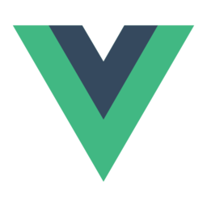
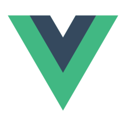

Graag wil ik mezelf voorstellen
Hallo! Ik ben Ana. Ik kijk ernaar uit om mijn passie voor design te delen en samen te werken aan inspirerende projecten.
Niet alleen ben ik helemaal into ontwerp en gebruikerservaring, maar mijn achtergrond voegt ook wat spice toe aan mijn kijk op dingen. Ik kom oorspronkelijk uit Peru, heb een tijdje in Spanje gewoond, en ben bijna vijf jaar geleden naar België verhuisd. Samen met mijn partner en dochter geniet ik hier van het leven, omringd door diverse culturen en ideeën. Deze internationale rollercoaster heeft mijn creatieve visie verrijkt en mijn begrip van esthetiek en designprincipes verbreed. Ik ben dankbaar voor de groei en ervaringen in verschillende omgevingen, en ik kijk er super naar uit om mijn unieke perspectief in mijn ontwerpen te laten shinen!
Natuurlijk! Hier zijn enkele voorbeelden van mijn hard skills:
UX/UI Design
Ik heb ervaring met het creëren van intuïtieve gebruikersinterfaces en het ontwerpen van boeiende gebruikerservaringen.

Front-End Web Development
Ik beheers HTML, CSS en JavaScript. Bovendien blijf ik mijn technische vaardigheden uitbreiden en leer ik momenteel aanvullende tools en frameworks.
Grafisch ontwerp en illustratie
Ik ben handig met grafische tools. Het maken van aantrekkelijke visuals, iconen en illustraties in lijn met de merkidentiteit is mijn ding..
Prototyping en interactieontwerp
Ik heb ervaring in het maken van interactieve prototypes om de gebruikerservaring te testen en te verbeteren.
Branding en visueel identiteitsontwerp
Ik kan sterke merkidentiteiten ontwikkelen met een consistente visuele uitstraling, inclusief logo's, kleuren en lettertypen.
Usability Testing en User Research
Ik kan gebruikersonderzoek doen en ontwerpen verbeteren voor een betere gebruikservaring.
Hier is een lijst van tools die ik regelmatig gebruik:
Dit is een overzicht van de tools die ik momenteel gebruik om mijn werk efficiënt uit te voeren. Maar ik ben ook altijd bereid om nieuwe tools en technologieën te verkennen en te leren.


.png)


in het leerproces
Momenteel ben ik bezig met het leren van PHP, Sass, Vue.js, WordPress en Craft CMS.

 
